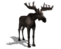

 The End Mission Task
Description
This task has the highest allowable priority. It can be activated on safe completion of other tasks
or on an error condition. Scripted configuration allows specifiaction of elevator rudder and thrust control
at mission completion.
Publishes
Subscribes
Configuration Block
- Common Task Parameters
EndThrust
- Syntax: EndThrust = Thrust [0-100]
- Meaning: Set Thrust to "Thrust" on going active
- Example: EndThrust = 20 On going active set thrust to 20 pc
EndElevator
- Syntax: EndElevator = Angle
- Meaning: Set Elevetator to Angle
- Example: EndElevator = 10 Elevator will be set to 20 deg
EndRudder
- Syntax: EndRudder = Angle
- Meaning: Set Rudder to Angle
- Example: EndRudder =5 Rudder will be set to 5 deg
The MOOS © P. Newman 2001-2002